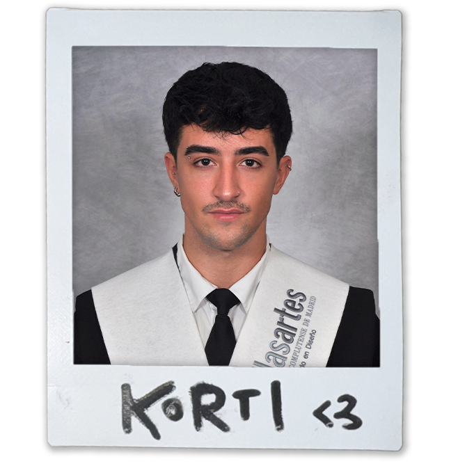

About me
¡Hola!, soy Korti. Diseñador transmedia con un enfoque híbrido. Mi trabajo une la experimentación gráfica con el pensamiento estratégico, creando soluciones que funcionan tanto en el plano visual como en el comercial.
DESCARGAR CV (PDF)DESCARGAR PORTFOLIO (PDF)